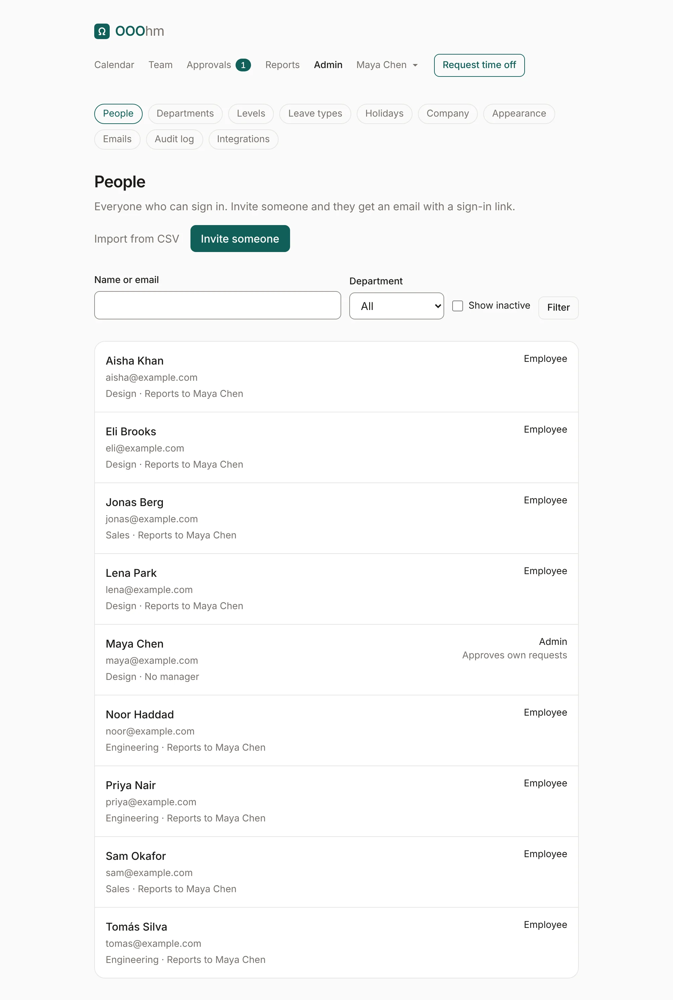
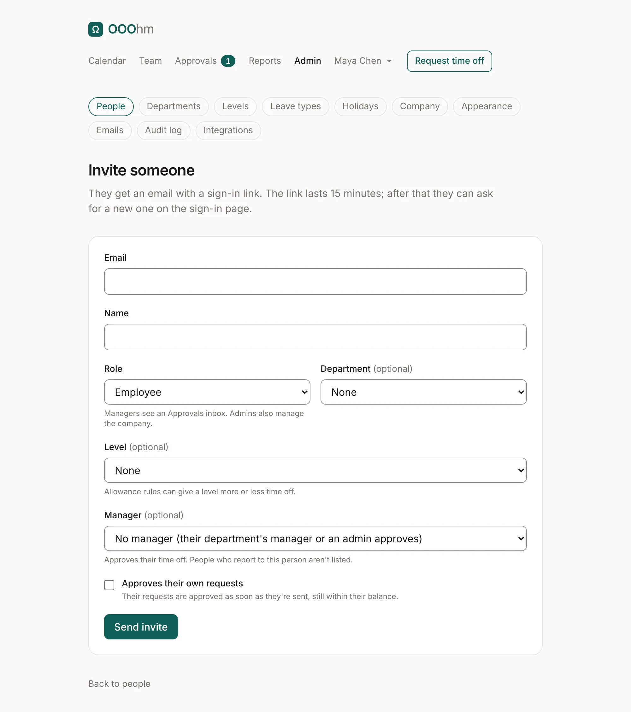
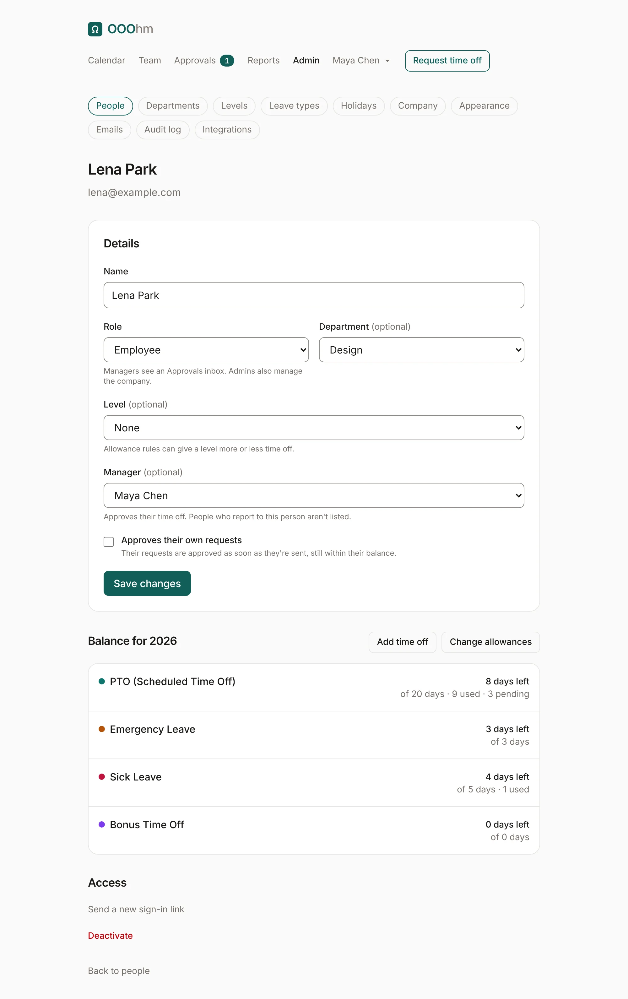
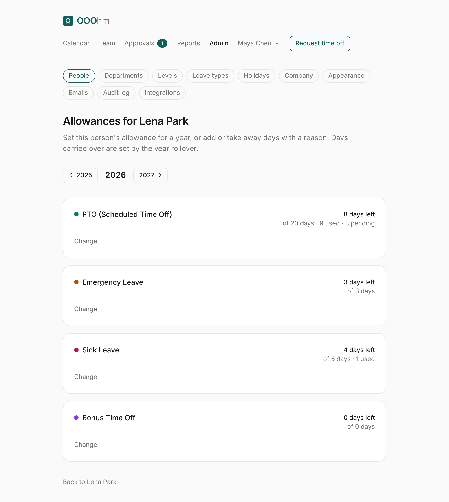
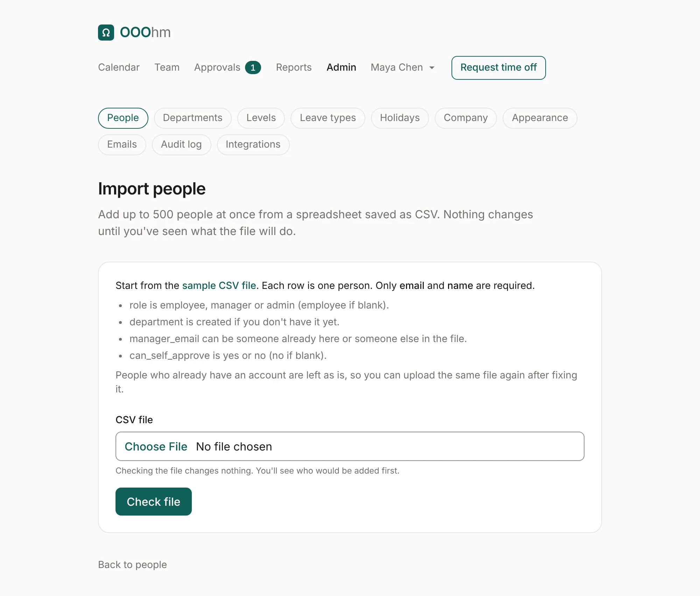
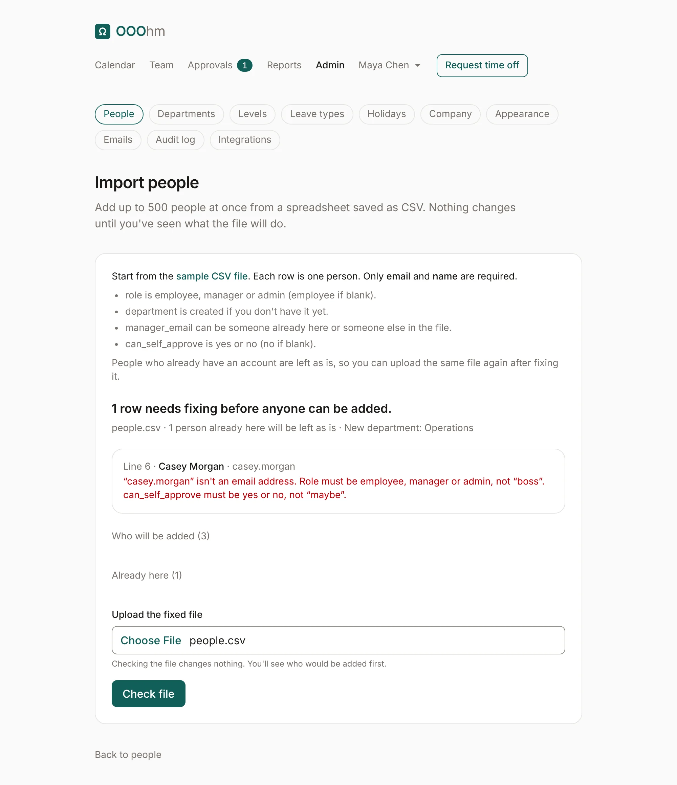
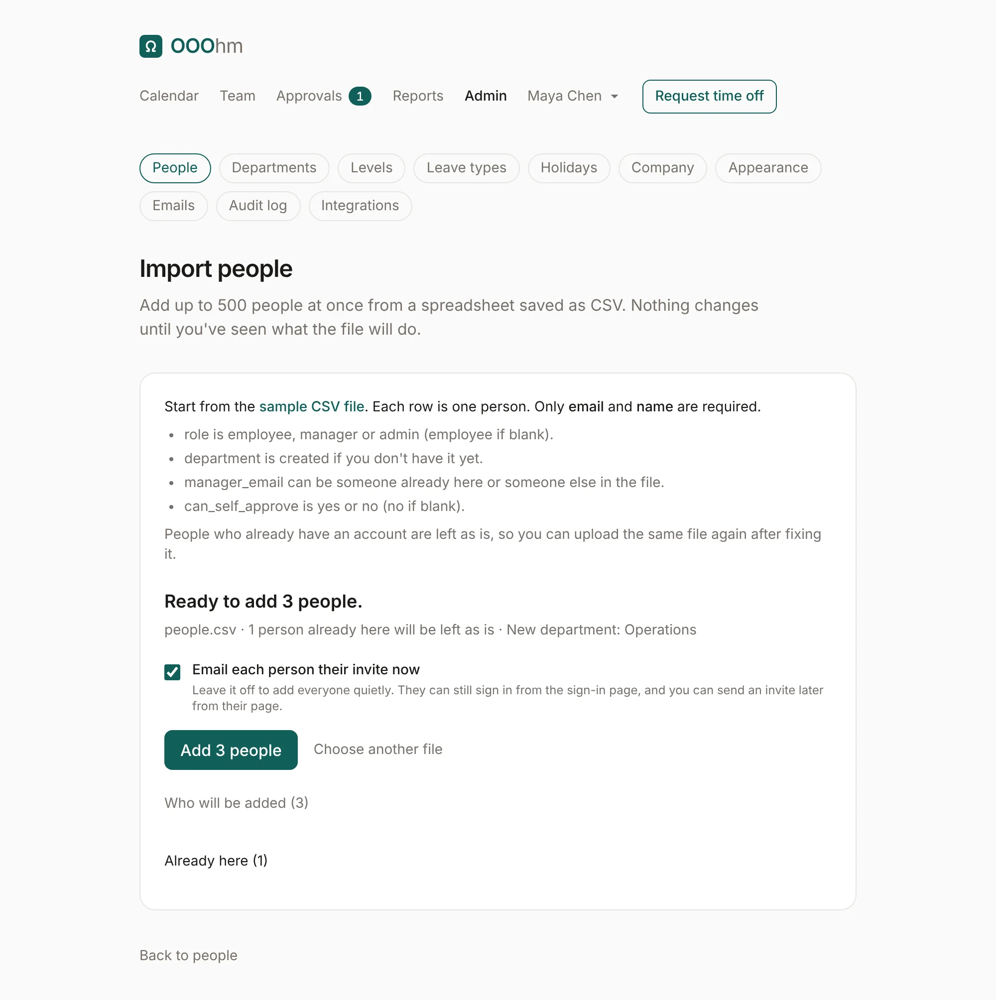

People
Admin → People lists everyone who can sign in. Search by name or email, filter by department, and tick Show inactive to include deactivated people. Each row shows their department, who they report to, their role, and whether they approve their own requests.

Inviting someone
Invite someone opens the invite form. The person gets an invite email with a sign-in link. This is the only way people get in: signing in can't create an account.

| Field | What it does |
|---|---|
| How they sign in. One account per address. | |
| Name | How they appear to the team, on the calendar and in emails. |
| Role | Employee, Manager or Admin. Managers see an Approvals inbox and Reports; admins also manage the company. |
| Department | Optional. Used for the Who's out filter, reports, department managers, coverage limits, allowance rules and department scoping. |
| Level | Optional, and only shown once you have levels. Allowance rules can give a level more or less time off. |
| Manager | Approves their time off. With no manager, their department's manager approves, else an admin. People who report to this person aren't listed, so nobody ends up approving their own manager. |
| Approves their own requests | Their requests are approved as soon as they're sent, still within their balance. |
A person's admin page
Open a name to change their details, see their balance for this year, and manage their access.

- Add time off opens their page under Team, with the add time off form.
- Change allowances sets their own allowance for a year (see below).
- Send a new sign-in link emails them a fresh invite.
- Deactivate signs them out and stops them signing in; their calendar links stop working too. Their requests stay. Requests waiting for their approval move to another approver. Reactivate undoes it.
Allowances
Change allowances lists each leave type for a year, with what they get by default. Change sets this person's own Allowance for that year, an Adjustment (days added on top, or taken away with a minus), and a Reason, which is kept in the audit log. Leave types that don't count against an allowance have nothing to set.

Where the default comes from: the leave type's yearly allowance, or an allowance rule for their department or level. A person's own allowance beats both.
Deleting someone
Deleting takes two steps, so nobody is removed by accident: deactivate them first, then Delete shows on their page. You choose how:
- Remove everything: nothing about them stays in OOOhm. Approvals they made on other people's leave stay, under "Former employee". If the company turned on the 7-day wait, it's scheduled instead, and you can Undo it on their page or the People list until it runs.
- Remove their account, keep their records: their sign-in and email go; their leave, balances, approvals and audit entries stay under "Name (deleted)", and their email can be invited again as a new account.
The dialog lists exactly what goes and what stays, offers Download their records first, and asks you to type their name to confirm. Someone who still has people reporting to them, or the only admin, can't be deleted until that's sorted out; the dialog says what to do first.
Importing people from a CSV
Import from CSV on the People page adds up to 500 people at once. Nothing changes until you've seen what the file will do.

Start from the sample CSV file on the page. Each row is one person:
| Column | Required | Values |
|---|---|---|
email | Yes | Their work email. |
name | Yes | Their name. |
role | No | employee, manager or admin. Blank means employee. |
department | No | Created if you don't have it yet. |
manager_email | No | Someone already in OOOhm, or someone else in the same file. |
can_self_approve | No | yes or no. Blank means no. |
Check file reads it and shows what would happen. If any row has a problem, nothing can be added until it's fixed, and each problem names its line:

People who already have an account are left as is, so you can fix the file and upload it again. When every row is fine, Add N people adds them all at once (all or nothing). Tick Email each person their invite now to send invites; leave it off to add everyone quietly. They can still sign in from the sign-in page, and you can send an invite later from their page.
